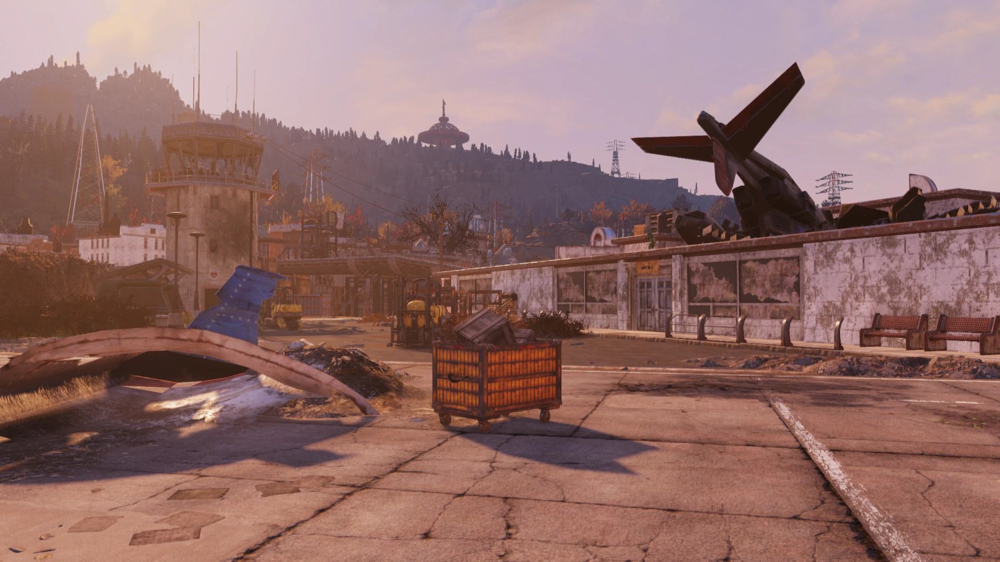
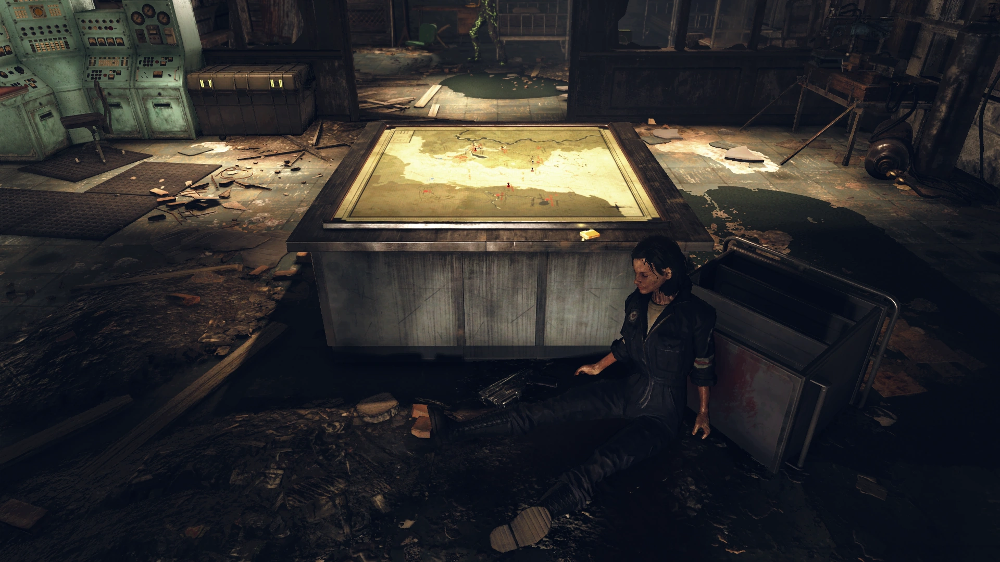
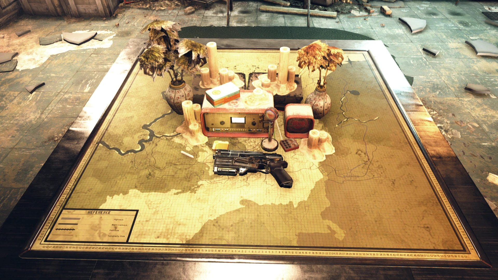

Maria Chavez
マリア・チャベス
— Maria's last words
概要
シニア・レスポンダー マリア・E・チャベスは、大戦前の救急救命士であり、アパラチアのファーストレスポンダー（ファースト・レスポンダー）たちによって大戦後に結成された組織レスポンダーの創設者の一人にしてリーダーでした。
元軍人、警察官、医療従事者、消防士で構成されたレスポンダーは、森林地帯の大部分を管理し、チャールストン非常事態政府と協力していました。チャールストンの壊滅後は、チャベスのリーダーシップの下で独立した組織として活動しました。
ブラザーフッド・オブ・スティールとチャベスのレスポンダーとの間の不和は、両組織の壊滅とスコーチによるこの地域の短期間の支配につながりました。
レスポンダーは最終的にラッカーによって復活し、元のレスポンダーが全滅してから8年後にチャベスの後を継ぎました。
マリアの遺体はかつてモーガンタウン空港ターミナル内のレスポンダー司令部で見つけることができましたが、Wastelanders アップデート以降、その場所はドントレル・ヘインズによるレスポンダーへの追悼の場に変わっています。
背景
大戦前の救急救命士であるマリア・チャベスは、チャールストンでAVRメディカルセンターにフルタイムで勤務していた女性の娘でした。戦時中の医薬品の供給不足が価格を高騰させ、幼いマリアの母は給料では薬を買えなくなりました。母は園芸の才能を活かしてハーブや花の庭を作り、手作りのハーブ療法を生み出しました。母の知恵を受け継ぎ、チャベスは自然療法に理解のある救急救命士となりました。

大戦後、チャベスはレスポンダーの創設者の一人となりました。警察、消防、医療サービスによる復旧活動に参加し、核戦争による混乱に対処するためにアパラチア領域全体に非常事態を宣言したチャールストン非常事態政府と緩やかに協力しました。
しかし、エヴァンス知事は大戦前の公金横領調査から逃亡して不在となり、プール議長とホルブルック副院総務との政治的競争もあり、ファーストレスポンダーたちは自らの判断で行動しつつ、非常事態政府の命令に従っているふりをしていました。
2082年までに、レスポンダーはチャールストンの事実上の政府となっていました。
チャベスは医療に注力し、特に減少する大戦前の医薬品の代替品を見つけることに集中しました。母の職場であるAVRメディカルセンターへの訪問が、自然療法医学への関心を再燃させ、アパラチアの植物から代替的な治療法を求めることにつながりました。
また、ジェフ・ナカムラとのゴーリー鉱山からのダイナマイト回収の調整や、月例の偵察活動によるVault 76の監視などの活動も行っていました。
すべてが変わったのは2082年のクリスマスでした。デイヴィッド・ソープによる「クリスマスの大洪水」がチャールストンを壊滅させ、何千人もの命と大半のレスポンダーを奪いました。

しかしレスポンダーは完全には壊滅しませんでした。すでにアレゲニー高原を北方に拡大し、新興のフリー・ステイツとの交易路を確保し、大戦直後にフラットウッズにボランティア前哨基地を設立していたからです。
マリアは一握りの上級メンバーと共に洪水を生き延び、レスポンダーの再建を決意しました。
彼女のリーダーシップの下、レスポンダーはモーガンタウン空港に移転し、次の10年間で、ボランティアベースの組織として治療と生存技術の教育に焦点を当てながら、ほぼゼロから再建されました。
チャベスは暴力や戦闘を好みませんでしたが、メロディ・ラーキンの説得により、荒廃したアッシュ・ヒープでの長距離救助作戦を目的とした特殊部隊ファイア・ブリーザーを結成するための資源を割り当てました。
北方のトキシック・バレーに拡大するにつれ、レスポンダーはエリザベス・タガーディのブラザーフッド・オブ・スティールやフリー・ステイツとの接触を再確立しました。チャベスとタガーディは——一方は文民の治癒者、他方は軍人の兵士として——協力に苦労しましたが、当初は深刻な問題ではありませんでした。
2086年はチャベス、レスポンダー、そしてアパラチア全体にとって最高潮を迎えました。ハンターズビルのスーパーミュータントが持続的な脅威となり、レスポンダーとブラザーフッドの同盟が結ばれ、1986年5月のハンターズビルの戦いでスーパーミュータントを排除しました。
しかし同盟は複数の要因で崩壊しました。まず、エルダー・ロジャー・マクソンが命じた任務の変更——危険な技術の確保と隔離——が、外部からは恣意的な没収に見えたこと。次にスコーチビーストの脅威。2086年にはクランベリー・ボグ全域に急速に広がり、ブラザーフッドはレスポンダーに維持のための資源を求めました。これがチャベスとタガーディの間に大きな亀裂を生みました。
脆い同盟は急速に崩壊しました。フリー・ステイツはバンカーに戻り、ブラザーフッドは絶望的な消耗戦を続け、レスポンダーはアレゲニー山脈西側の生存者を可能な限り支えようとしました。
チャベスはスコーチの脅威の深刻さを認識するのが遅れ、レスポンダーには管理下の人々への義務があると信じていました。

1095年1月28日の「タッチダウン作戦」失敗後、ブラザーフッドの残存勢力はより攻撃的になりました。チャベスは環境科学者のエイミー・ケリーをブラザーフッドの没収から守ろうとし、最終的に銃口を向けられてケリーのプロジェクト情報を渡さざるを得なくなりました。
1095年8月のブラザーフッドの暗号放送「ディファイアンスは陥落した」は、チャベスに深い不安を抱かせました。彼女はレスポンダーのタミーを荒れた境域を越えてアビゲイル・シンのバンカーに送り、何が起こったのか、そして何がレスポンダーに迫っているのかを知ろうとしました。
最初の波は、スコーチに追われて山から逃げてきたレイダーたちでした。2番目の波はスコーチそのもの——アパラチア全域に広がっていました。
チャベスは脅威の深刻さを遅れて認識し、クレア・ハドソンに治療法の開発を依頼。2096年7月、AVRメディカルセンターの地下に研究チームが設置され、スコーチ疫病の秘密の解明に取り組みました。
一方、チャベスとラーキンはファイア・ブリーザーにビッグベンドトンネルを封鎖する大胆な作戦を準備させましたが、タッチダウン作戦と同様に失敗しました。
スコーチビーストとスコーチは組織的な抵抗を前にすることなくモーガンタウン空港に襲来しました。2096年11月7日、空は怪物で満たされ、マリア・チャベスはAVRのハドソンへ最後の通信を送り、残りのレスポンダーと共に最後の抵抗に加わりました。
ブラザーフッドの火力も、フリー・ステイツの回復力も、レイダーの容赦ない知恵もなく、レスポンダーは孤立して倒れました。チャベスはモーガンタウン空港ターミナル内の司令部から防衛を指揮し、最後の言葉を録音した後に倒れた者の一人となりました。

彼女の遺体はその後7年間ターミナルに残り、ポストアポカリプスの環境の中でミイラ化しました。2102年にVault 76の住民が現れた後、彼女の最後の嘆願がワクチンプロジェクトの完成と疫病とスコーチビーストの最終的な打倒につながりました。
2103年に人類がアパラチアに帰還し、ドントレル・ヘインズがレスポンダー司令部を清掃してチャベスを埋葬し、小さな追悼碑を建てました。
さらに大きな記念として、ラッカーが2104年にホワイトスプリング・リゾートでレスポンダーを再建し、チャベスの松明を暗闇の中に受け継ぎました。
所有アイテム
- レスポンダー・パラメディック・ジャンプスーツ（着用）
- Maria's last words（近くに配置）
関連ホロテープ
🎙️ Out of time（時間切れ）
🎙️ Maria's last words（マリアの最後の言葉）
🎙️ The Christmas Flood（クリスマスの大洪水）
🎙️ The Fire Breathers（ファイア・ブリーザー）
🎙️ Field report: AVR Medical（現地報告: AVRメディカル）
🎙️ Responders recruitment holotape（レスポンダー・リクルートメント・ホロテープ）
登場作品
マリア・チャベスは『Fallout 76』にのみ登場します。
ギャラリー
マリア・チャベスは、Fallout 76の物語の中心に位置する、最も人間らしいリーダーの一人です。
彼女の物語は、暴力的な解決策を拒み、人々を癒し教えることに全てを捧げた女性の悲劇であり、同時にその精神が後世に受け継がれていく希望の物語でもあります。母から受け継いだハーブ療法の知識、チャールストンの壊滅からの再建、ファイア・ブリーザー設立の議論——どのエピソードにも、彼女の「暴力ではなく知恵で問題を解決する」という哲学が貫かれています。
特に「Out of time（時間切れ）」のホロテープは、レオの感情的な怒りに対して冷静に——しかし明らかに苦しみながら——自殺任務を命じるマリアの姿が胸を打ちます。「もう時間はないの、レオ」という一言が、レスポンダーの運命を決定付けました。
そして最後の言葉。銃声と叫び声の中で、最後の息を使って未来のVault住民に希望を託す。「私たちを覚えていて」——プレイヤーが彼女のホロテープを聞く瞬間、その願いは叶えられます。
Wastelanders以降、遺体が撤去されて追悼碑が設置されたことは、開発者からの敬意の表れでもあるように感じます。彼女はようやく安らかに眠ることができたのです。
This article was created by translating and editing Maria Chavez from Nukapedia: The Fallout Wiki.
Licensed under the Creative Commons Attribution-Share Alike License (CC BY-SA 3.0).
コミュニティ維持のため、寄付を受け付けております。
> COMMENTS